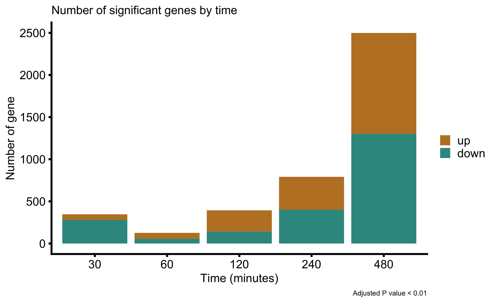
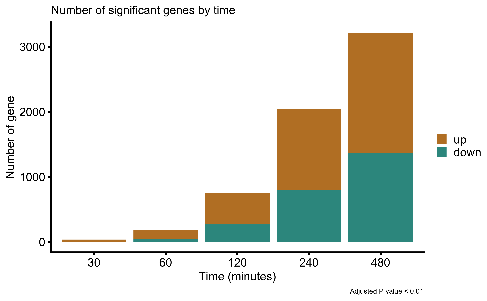
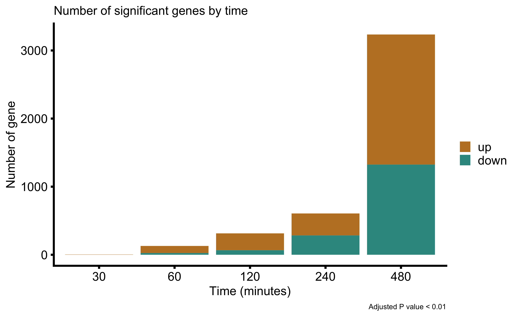
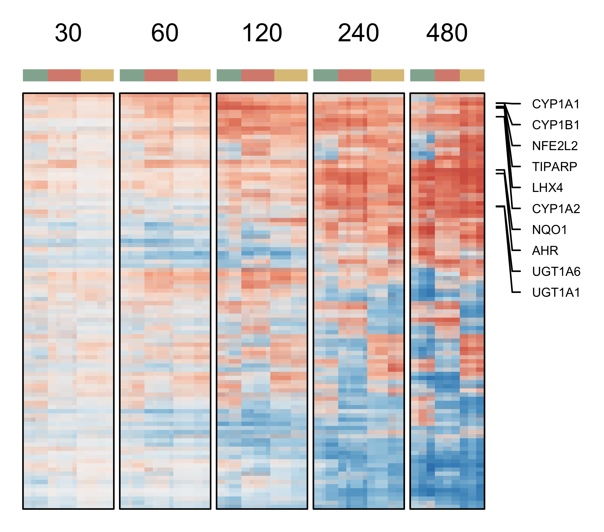
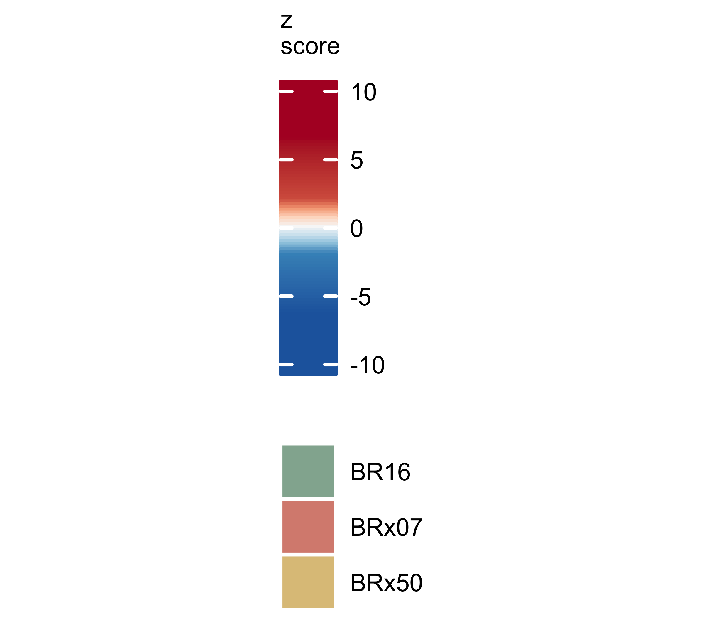
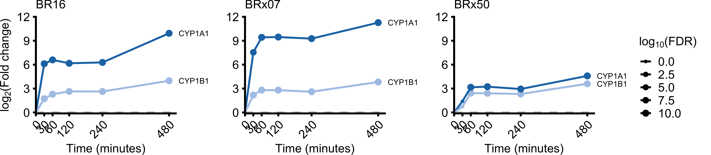
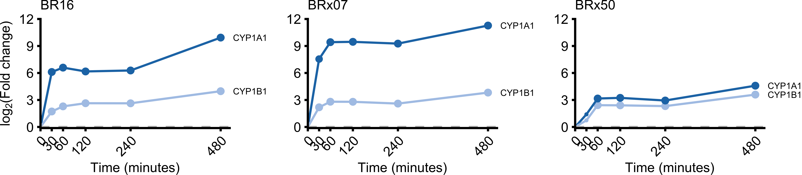
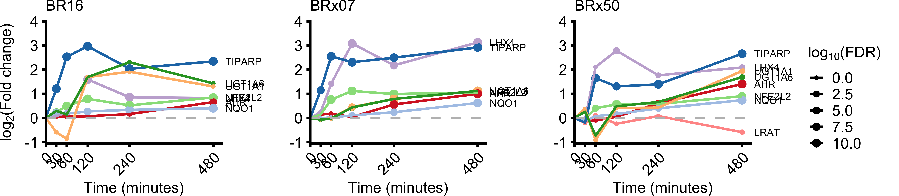
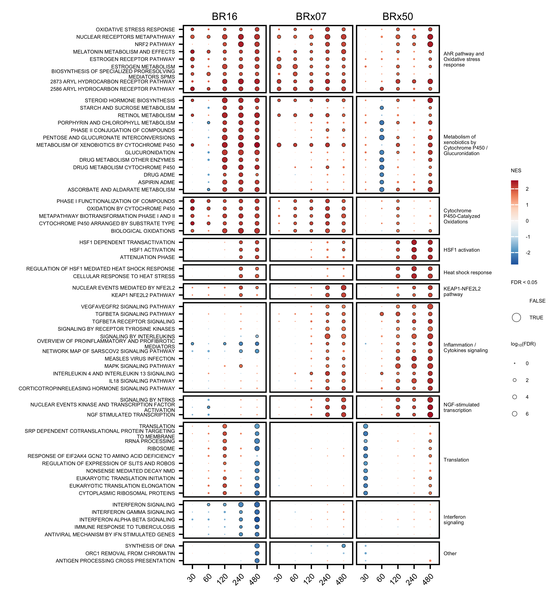
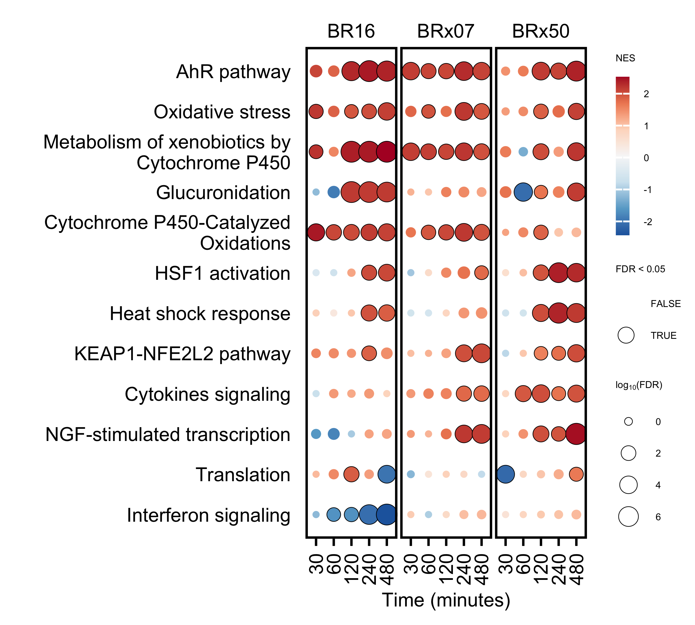

Last updated: 2025-01-08
Checks: 7 0
Knit directory: ildiz-ctc-shear-stress/
This reproducible R Markdown analysis was created with workflowr (version 1.7.1). The Checks tab describes the reproducibility checks that were applied when the results were created. The Past versions tab lists the development history.
Great! Since the R Markdown file has been committed to the Git repository, you know the exact version of the code that produced these results.
Great job! The global environment was empty. Objects defined in the global environment can affect the analysis in your R Markdown file in unknown ways. For reproduciblity it’s best to always run the code in an empty environment.
The command set.seed(20250108) was run prior to running
the code in the R Markdown file. Setting a seed ensures that any results
that rely on randomness, e.g. subsampling or permutations, are
reproducible.
Great job! Recording the operating system, R version, and package versions is critical for reproducibility.
Nice! There were no cached chunks for this analysis, so you can be confident that you successfully produced the results during this run.
Great job! Using relative paths to the files within your workflowr project makes it easier to run your code on other machines.
Great! You are using Git for version control. Tracking code development and connecting the code version to the results is critical for reproducibility.
The results in this page were generated with repository version ce461f6. See the Past versions tab to see a history of the changes made to the R Markdown and HTML files.
Note that you need to be careful to ensure that all relevant files for
the analysis have been committed to Git prior to generating the results
(you can use wflow_publish or
wflow_git_commit). workflowr only checks the R Markdown
file, but you know if there are other scripts or data files that it
depends on. Below is the status of the Git repository when the results
were generated:
Ignored files:
Ignored: .Rhistory
Ignored: .Rproj.user/
Ignored: data/crispr/
Ignored: data/resources/
Ignored: data/rnaseq/
Untracked files:
Untracked: analysis/rnaseq-bulk-br16-time_series.Rmd
Untracked: analysis/rnaseq-bulk-brx07-time_series.Rmd
Untracked: analysis/rnaseq-bulk-brx50-time_series.Rmd
Untracked: code/R-functions/
Untracked: configuration/
Untracked: output/crispr/
Untracked: output/rnaseq/
Unstaged changes:
Modified: .gitignore
Modified: ildiz-ctc-shear-stress.Rproj
Note that any generated files, e.g. HTML, png, CSS, etc., are not included in this status report because it is ok for generated content to have uncommitted changes.
These are the previous versions of the repository in which changes were
made to the R Markdown
(analysis/rnaseq-bulk-all_models-time_series.Rmd) and HTML
(docs/rnaseq-bulk-all_models-time_series.html) files. If
you’ve configured a remote Git repository (see
?wflow_git_remote), click on the hyperlinks in the table
below to view the files as they were in that past version.
| File | Version | Author | Date | Message |
|---|---|---|---|---|
| html | fdfab95 | Francesc Castro-Giner | 2025-01-08 | Build site. |
| Rmd | caff916 | Francesc Castro-Giner | 2025-01-08 | add bulk and low-input RNA-seq analysis |
| html | 24f2abe | Francesc Castro-Giner | 2025-01-08 | Build site. |
| Rmd | 6323a09 | Francesc Castro-Giner | 2025-01-08 | add bulk RNA-seq analysis |
Setup environment
knitr::opts_chunk$set(results='asis', echo=TRUE, message=FALSE, warning=FALSE, error=FALSE, fig.align = 'center', fig.width = 3.5, fig.asp = 0.618, dpi = 600, dev = c("png", "pdf"), engine.opts = list(bash = "-l"))
options(stringsAsFactors = FALSE)
use_seed <- 1100101
set.seed(use_seed)
dir.create(params$output_dir, recursive = TRUE, showWarnings = FALSE)Load packages
# library(tidyverse)
library(ggplot2)
library(tibble)
library(tidyr)
library(readr)
library(purrr)
library(dplyr)
library(forcats)
library(magrittr)
library(foreach)
library(showtext)
library(ggupset)
library(ggtext)
library(glue)
library(cowplot)
library(colorblindr)
library(DT)
library(knitr)
library(kableExtra)
library(RColorBrewer)
library(ggbeeswarm)
library(ggrepel)
library(ComplexHeatmap)
library(circlize)
library(openxlsx)
library(SummarizedExperiment)
library(edgeR)
library(DESeq2)
library(scuttle)
library(scran)
library(pheatmap)
library(PCAtools)
library(apeglm)
library(patchwork)
library(geomtextpath)
library(enrichplot)Clean files generated in previous runs
rmd_file <- current_input()
if(!is.null(rmd_file)) {
figures_dir <- file.path('./docs/figure',rmd_file)
if(dir.exists(figures_dir)) {
unlink(file.path(figures_dir, "*"))
}
}Load ggplot theme
source("./configuration/rmarkdown/ggplot_theme.R")Set color palettes
Load custom functions
source('./code/R-functions/dge_report.r')
source('./code/R-functions/gse_omnibus.r')
source('./code/R-functions/gse_report.r')
source('./code/R-functions/gse_treeplot.R')
source('./code/R-functions/wordcloud.R') # required for gse_treeplot.R
clean_msigdb_names <- function(x) x %>% gsub('HALLMARK_', '', .) %>% gsub('REACTOME_', '', .) %>% gsub('WP_', '', .) %>% gsub('BIOCARTA_', '', .) %>% gsub('KEGG_', '', .) %>% gsub('PID_', '', .) %>% gsub('GOBP_', '', .) %>% gsub('_', ' ', .)Load MSigDB gene sets
msigdb_vs <- 'v2022.1.Hs'
gmt_files_symbols <- list(
msigdb.c2.cp = paste0('./data/resources/MSigDB/', msigdb_vs, '/c2.cp.', msigdb_vs, '.symbols.gmt')
)se_br16 <- readRDS('data/rnaseq/bulk/se_br16.rds')
se_brx07 <- readRDS('data/rnaseq/bulk/se_brx07.rds')
se_brx50 <- readRDS('data/rnaseq/bulk/se_brx50.rds')
se_br16$sample_alias <- paste0(se_br16$donor, '_',se_br16$sample_alias)
se_brx07$sample_alias <- paste0(se_brx07$donor, '_',se_brx07$sample_alias)
se_brx50$sample_alias <- paste0(se_brx50$donor, '_',se_brx50$sample_alias)
colnames(se_br16) <- se_br16$sample_alias
colnames(se_brx07) <- se_brx07$sample_alias
colnames(se_brx50) <- se_brx50$sample_alias
rowData(se_br16) %<>% data.frame %>% dplyr::select(-mean, -detected) %>% DataFrame
rowData(se_brx07) %<>% data.frame %>% dplyr::select(-mean, -detected) %>% DataFrame
rowData(se_brx50) %<>% data.frame %>% dplyr::select(-mean, -detected) %>% DataFrame
se <- cbind(se_br16, se_brx07, se_brx50)
se_o <- colData(se) %>% data.frame %>%
mutate(
total_features = nrow(se),
pct_detected = 100*detected/total_features
)
rm(se_br16, se_brx07, se_brx50)Modify annotation
colData(se) <- colData(se) %>% data.frame %>%
mutate(
condition = factor(condition, levels= c('Control', 'Chip')),
time = factor(time, levels=time %>% as.numeric %>% sort %>% unique),
group = paste(condition, time, sep = '_'),
group = factor(group,
levels = paste(
c('Control', 'Chip'),
time %>% as.character %>% as.numeric %>% sort %>% unique %>% rep(2) %>% sort,
sep = '_')
)
) %>%
DataFrameSubset by feature type. Using protein coding features and lncRNA
use_rows <- rowData(se)$gene_type %in% c('protein_coding', 'lncRNA')
se <- se[use_rows,]Filtering out low-abundance features. Keeping those features with at least 10 counts in at least 70% of samples of the smallest group.
use_rows <- filterByExpr(se, group=paste(se$condition,se$time, sep = '-'), min.count = 10, min.total.count = 15, min.prop = 0.7)
se <- se[use_rows,]
# Update PerCellQCMetrics
colData(se) <- colData(se) %>% data.frame %>% dplyr::select(-(sum:subsets_Ribo_percent)) %>% DataFrame
se <- addPerCellQCMetrics(
se,
subsets=list(
Mito=which(rowData(se)$is.mito),
Ribo=which(rowData(se)$is.ribo)
),
percent.top = c(1,5,10,20, 50, 100),
threshold = 3
)
# Table of removed features
table(use_rows) %>%
data.frame %>%
mutate(use_rows = ifelse(use_rows == TRUE, 'keep', 'remove')) %>%
column_to_rownames('use_rows') %>%
kbl(caption = 'Filtered features') %>%
kable_paper(bootstrap_options = c("striped", "hover", "condensed"), full_width = F)TMM normalization
norm_method <- "TMM"
exprs_mat_for_norm <- assay(se, 'counts')
norm_factors <- calcNormFactors(exprs_mat_for_norm, method = norm_method)
lib_size <- colSums(exprs_mat_for_norm)/10^6
se$size_factor <- (norm_factors * lib_size)
se <- logNormCounts(se, size.factors =se$size_factor)
se <- logNormCounts(se, size.factors =se$size_factor, log = FALSE)CPM calculation
assay(se, 'cpm') <- edgeR::cpm(assay(se, 'normcounts'))
assay(se, 'logcpm') <- edgeR::cpm(assay(se, 'normcounts'), log = TRUE)Save final data
saveRDS(se, file = file.path(params$output_dir, 'se_merged.rds'))Load final data
se <- readRDS(file = file.path(params$output_dir, 'se_merged.rds'))Here we load differential expression results for each model. This results have been pre-computed in the corresponding Rmd files:
dir_output <- dirname(params$output_dir)
dge <- foreach(i=unique(se$donor)) %do% readRDS(file = file.path(dir_output, tolower(i), 'dge_deseq2.rds'))
names(dge) <- unique(se$donor)
# fold-change data.frame
fc_by_time <- foreach(tm = levels(se$time)[-1]) %do% {
foreach(donor = names(dge), .combine = rbind) %do% {
dge[[donor]]$lrt_time[[tm]] %>% dplyr::select(ensembl_gene_id, gene_name, log2FoldChange) %>% mutate(donor = donor)
} %>% data.frame(check.names = FALSE) %>%
pivot_wider(names_from = donor, values_from = log2FoldChange)
}
names(fc_by_time) <- levels(se$time)[-1]
# padj data.frame
p_by_time <- foreach(tm = levels(se$time)[-1]) %do% {
foreach(donor = names(dge), .combine = rbind) %do% {
dge[[donor]]$lrt_time[[tm]] %>% dplyr::select(ensembl_gene_id, gene_name, padj) %>% mutate(donor = donor)
} %>% data.frame(check.names = FALSE)
}
names(p_by_time) <- levels(se$time)[-1]
# Single data.frame with all the DGE results (all models and times)
dge_df <- foreach(tm = levels(se$time)[-1], .combine = rbind) %do% {
foreach(donor = names(dge), .combine = rbind) %do% {
dge[[donor]]$lrt_time[[tm]] %>% mutate(donor = donor)
} %>% data.frame(check.names = FALSE) %>%
mutate(time = tm)
}
saveRDS(dge_df, file = file.path(params$output_dir, 'dge_deseq2_df_combined.rds'))Define list and expression matrix used for heatmap and module definition
# Logcounts matrix of top-genes
use_rows <- dge_df %>%
filter(padj < 0.01) %>%
filter(ensembl_gene_id %in% rownames(se)) %>%
pull(ensembl_gene_id) %>%
unique
mat <- assay(se[use_rows,], 'logcounts')
zmat <- foreach(donor = unique(se$donor), .combine = cbind) %do% {
use_se <- se[,se$donor == donor]
use_mat <- mat[,colnames(use_se)]
res <- t(apply(use_mat, 1, function(x) {scale(x, center = mean(x[colnames(use_se)[use_se$group == 'Control_0']]), scale = TRUE)}))
res[is.na(res)] <- 0
colnames(res) <- colnames(use_mat)
res
}
# Order columns by condition - time - replicate
col_ord <- colData(se) %>% data.frame %>% arrange(condition, time, replicate) %>% pull(sample_alias)
mat <- mat[,col_ord]
zmat <- zmat[,col_ord]
# Save matrix
mat_topgenes <- mat
zmat_topgenes <- zmat
rm(mat, zmat)
saveRDS(mat_topgenes, file = file.path(params$output_dir, 'dge_deseq2_combined_mat_topgenes.rds'))
saveRDS(zmat_topgenes, file = file.path(params$output_dir, 'dge_deseq2_combined_zmat_topgenes.rds'))Load data
dge_df <- readRDS(file = file.path(params$output_dir, 'dge_deseq2_df_combined.rds'))
mat_topgenes <- readRDS(file.path(params$output_dir, 'dge_deseq2_combined_mat_topgenes.rds'))
zmat_topgenes <- readRDS(file.path(params$output_dir, 'dge_deseq2_combined_zmat_topgenes.rds'))dir_output <- dirname(params$output_dir)
time_gse_omnibus <- foreach(i=unique(se$donor)) %do% readRDS(file = file.path(dir_output, tolower(i), 'dge_deseq2_time_gse.rds'))
names(time_gse_omnibus) <- unique(se$donor)
saveRDS(time_gse_omnibus, file = file.path(params$output_dir, 'time_gse_omnibus.rds'))time_gse_omnibus <- readRDS(file.path(params$output_dir, 'time_gse_omnibus.rds'))dir_output <- dirname(params$output_dir)
dge_list <- foreach(i=unique(se$donor)) %do% readRDS(file = file.path(dir_output, tolower(i), 'dge_deseq2.rds'))
names(dge_list) <- unique(se$donor) %>% gsub('BRx', 'Brx-', .)# File name summary
rmd_file <- current_input()
if(is.null(rmd_file))
rmd_file <- 'tmp'
file_xlsx <- file.path('./docs/file',rmd_file, 'st_1_dge.xlsx')
dir.create(dirname(file_xlsx), recursive = TRUE, showWarnings = FALSE)
# Generate workbook
wb <- createWorkbook()
for(i in names(dge_list)) {
use_dge <- dge_list[[i]]$lrt_time
names(use_dge) <- (as.numeric(names(use_dge)) / 60) %>%
as.character
for(j in names(use_dge)) {
sheet_name <- paste0(i, ' timepoint ', j, 'h')
addWorksheet(wb, sheet_name)
res <- use_dge[[j]] %>%
dplyr::select(gene_name,
ensembl_gene_id,
gene_type,
log2FoldChange,
pvalue,
padj,
description) %>%
arrange(padj)
writeData(wb, sheet_name, res)
}
}
saveWorkbook(wb, file_xlsx, TRUE)
dge_file_xlsx <- file_xlsxtest_type <- 'GSEA'
gset_collection <- 'msigdb.c2.cp'
use_gse_omnibus <- time_gse_omnibus
names(use_gse_omnibus) <- names(use_gse_omnibus) %>% gsub('BRx', 'Brx-', .)
# File name summary
rmd_file <- current_input()
if(is.null(rmd_file))
rmd_file <- 'tmp'
file_xlsx <- file.path('./docs/file',rmd_file, 'st_2_gsea.xlsx')
dir.create(dirname(file_xlsx), recursive = TRUE, showWarnings = FALSE)
# Generate workbook
wb <- createWorkbook()
for(i in names(use_gse_omnibus)) {
use_gse_i <- use_gse_omnibus[[i]]
names(use_gse_i) <- (as.numeric(names(use_gse_i)) / 60) %>%
as.character
for(j in names(use_gse_i)) {
sheet_name <- paste0(i, ' timepoint ', j, 'h')
addWorksheet(wb, sheet_name)
res <- use_gse_i[[j]][[test_type]][[gset_collection]]@result %>%
filter(grepl('REACTOME|KEGG|WP_', ID)) %>%
filter(!ID %in% 'KEGG_TRYPTOPHAN_METABOLISM') %>%
filter(!ID %in% 'WP_GLUCURONIDATION') %>%
filter(!ID %in% 'WP_MAPK_SIGNALING_PATHWAY') %>%
mutate(
Description = clean_msigdb_names(Description)
) %>%
dplyr::select(ID,
Description,
setSize,
NES,
pvalue,
p.adjust,
leading_edge,
Count,
GeneRatio,
core_enrichment) %>%
arrange(pvalue)
writeData(wb, sheet_name, res)
}
}
saveWorkbook(wb, file_xlsx, TRUE)
gsea_file_xlsx <- file_xlsxp_thrs <- 0.01
dir_output <- dirname(params$output_dir)
dge_table_by_time <- foreach(use_model = unique(se$donor)) %do% {
dge <- readRDS(file = file.path(dir_output, tolower(use_model), 'dge_deseq2.rds'))
foreach(i = names(dge$lrt_time), .combine = rbind) %do% {
data.frame(
time = i,
all = dge$lrt_time[[i]] %>% filter(padj < p_thrs) %>% nrow,
up = dge$lrt_time[[i]] %>% filter(padj < p_thrs & log2FoldChange > 0) %>% nrow,
down = dge$lrt_time[[i]] %>% filter(padj < p_thrs & log2FoldChange < 0) %>% nrow
)
}
}
names(dge_table_by_time) <- tolower(unique(se$donor))Bar plot showing the number of differentially expressed genes in BR16 CTCs over time, comparing cells incubated in static conditions (control) and cells circulated through the microfluidic platform (shear stress) (bulk RNA-sequencing).
dge_table_by_time[['br16']] %>%
pivot_longer(cols = one_of(c('up', 'down')), names_to = 'set', values_to = 'genes') %>%
mutate(
time = factor(time, levels = names(time_palette)),
set = factor(set, levels = c('up', 'down'))) %>%
ggplot(aes(time, genes, fill = set)) +
geom_col() +
scale_fill_manual(values = c(up = brewer.pal(n = 11, name ="BrBG")[3], down = brewer.pal(n = 11, name ="BrBG")[9])) +
labs(
x = 'Time (minutes)',
y = 'Number of gene',
fill = '',
title = 'Number of significant genes by time',
caption = paste("Adjusted P value <", p_thrs)
)
| Version | Author | Date |
|---|---|---|
| 24f2abe | Francesc Castro-Giner | 2025-01-08 |
Bar plot showing the number of differentially expressed genes in Brx-07 CTCs over time, comparing cells incubated in static conditions (control) and cells circulated through the microfluidic platform (shear stress) (bulk RNA-sequencing).
dge_table_by_time[['brx07']] %>%
pivot_longer(cols = one_of(c('up', 'down')), names_to = 'set', values_to = 'genes') %>%
mutate(
time = factor(time, levels = names(time_palette)),
set = factor(set, levels = c('up', 'down'))) %>%
ggplot(aes(time, genes, fill = set)) +
geom_col() +
scale_fill_manual(values = c(up = brewer.pal(n = 11, name ="BrBG")[3], down = brewer.pal(n = 11, name ="BrBG")[9])) +
labs(
x = 'Time (minutes)',
y = 'Number of gene',
fill = '',
title = 'Number of significant genes by time',
caption = paste("Adjusted P value <", p_thrs)
)
| Version | Author | Date |
|---|---|---|
| 24f2abe | Francesc Castro-Giner | 2025-01-08 |
Bar plot showing the number of differentially expressed genes in Brx-50 CTCs over time, comparing cells incubated in static conditions (control) and cells circulated through the microfluidic platform (shear stress) (bulk RNA-sequencing).
dge_table_by_time[['brx50']] %>%
pivot_longer(cols = one_of(c('up', 'down')), names_to = 'set', values_to = 'genes') %>%
mutate(
time = factor(time, levels = names(time_palette)),
set = factor(set, levels = c('up', 'down'))) %>%
ggplot(aes(time, genes, fill = set)) +
geom_col() +
scale_fill_manual(values = c(up = brewer.pal(n = 11, name ="BrBG")[3], down = brewer.pal(n = 11, name ="BrBG")[9])) +
labs(
x = 'Time (minutes)',
y = 'Number of gene',
fill = '',
title = 'Number of significant genes by time',
caption = paste("Adjusted P value <", p_thrs)
)
| Version | Author | Date |
|---|---|---|
| 24f2abe | Francesc Castro-Giner | 2025-01-08 |
Heatmap showing row-normalized expression levels of differentially expressed genes (adjusted P value < 0.01, n = 6’982) for indicated CTC cell lines, between samples incubated in static conditions (control) and samples circulated through the microfluidic platform (shear stress) for varying durations. Annotated genes represent cytochrome P450 and AHR pathway related genes associated with xenobiotic response elements.
zmat <- zmat_topgenes
# Genes to annotate
use_genes_annot <- c('CYP1A1', 'CYP1B1', 'TIPARP',
'CYP1A2',
'NQO1', 'GSTA2', 'UGT1A1', 'UGT1A6', 'NFE2L2',
'AHR', 'LRAT', 'IL22', 'LHX4' )
# Z-score, using mean in Control_0 as scaling factor
use_cols <- colnames(zmat) %in% colnames(se)[se$group != 'Control_0']
use_zmat <- zmat[,use_cols]
use_cols_ord <- colData(se[,colnames(use_zmat)]) %>% data.frame %>%
arrange(condition, time, donor) %>% pull(sample_alias)
use_zmat <- use_zmat[,use_cols_ord]
# Select only samples from Chip
chip_samples <- colData(se[,colnames(use_zmat)]) %>%
data.frame %>%
filter(condition == 'Chip') %>%
pull(sample_alias)
use_zmat <- use_zmat[,chip_samples]
# Set heatmap color limiting the range matrix
zlim <- c(-2, 2)
zmax <- range(use_zmat) %>% abs %>% max()
col_fun <- colorRamp2(
c(-zmax, seq(zlim[1], zlim[2], length.out = 7), zmax),
rev(brewer.pal(n = 9, name ="RdBu")))
# Mark annotation
rownames(use_zmat) <- rowData(se[rownames(use_zmat),])$gene_name
use_genes_annot <- intersect(use_genes_annot, rownames(use_zmat))
row_mark_anno <- rowAnnotation(
foo = anno_mark(at = match(use_genes_annot, rownames(use_zmat)),
labels = use_genes_annot,
labels_gp = gpar(fontsize = 3),
lines_gp = gpar(lwd = 0.5),
link_width = unit(3, "mm"))
)
# Column annotation
column_ha <- HeatmapAnnotation(
model = colData(se[,colnames(use_zmat)])$donor,
col = list(model = alpha(donor_palette, 0.8)),
# height = unit(5, "mm"),
simple_anno_size = unit(1, "mm"),
show_annotation_name = FALSE,
show_legend = FALSE
# annotation_legend_param = list(title_gp = gpar(fontsize = 5),
# labels_gp = gpar(fontsize = 5),
# grid_width = unit(0.15, "cm"),
# title = '')
)
# Print the final heatmap
Heatmap(
use_zmat,
name = 'z\nscore',
col = col_fun,
right_annotation = row_mark_anno,
top_annotation = column_ha,
cluster_columns = FALSE,
show_row_names = FALSE,
show_column_names = FALSE,
row_title = NULL, # remove to see if row split names are equal to those added at left_annotation
row_dend_reorder = TRUE,
show_row_dend = FALSE,
# row_split = row_split,
column_split = se[,colnames(use_zmat)]$time,
column_gap = unit(0.5, "mm"),
border = TRUE,
border_gp = gpar(col = "black", lwd = 0.5),
column_names_gp = gpar(fontsize = 6),
# heatmap_legend_param = list(title_gp = gpar(fontsize = 5),
# labels_gp = gpar(fontsize = 5),
# grid_width = unit(0.15, "cm")),
column_title_gp = gpar(fontsize = 6),
use_raster = TRUE,
show_heatmap_legend = FALSE
)
| Version | Author | Date |
|---|---|---|
| 24f2abe | Francesc Castro-Giner | 2025-01-08 |
ht_legend <- Legend(col_fun = col_fun,
title = "z\nscore",
title_gp = gpar(fontsize = 5),
labels_gp = gpar(fontsize = 5)
)
column_ha_legend <- Legend(labels = names(donor_palette),
legend_gp = gpar(fill = alpha(donor_palette, 0.8)),
title = "",
# nrow = 1,
title_gp = gpar(fontsize = 5),
labels_gp = gpar(fontsize = 5)
# grid_width = unit(0.15, "cm")
)
pd <- packLegend(ht_legend, column_ha_legend, max_width = unit(10, "cm"),
row_gap = unit(5, "mm"))
draw(pd)
| Version | Author | Date |
|---|---|---|
| 24f2abe | Francesc Castro-Giner | 2025-01-08 |
Fold-change of cytochrome (CYP) P450 pathway related genes (upper), and AHR pathway related genes (lower) over time in samples upon incubation in static conditions (control) and samples circulated through the microfluidic platform (shear stress) across the indicated CTC cell lines.
use_linewidth <- 1/2.141959
# use_genes_annot <- c('CYP1A1', 'CYP1B1', 'TIPARP',
# 'CYP1A2',
# 'NQO1', 'GSTA2', 'UGT1A1', 'UGT1A6', 'NFE2L2',
# 'AHR', 'LRAT', 'IL22', 'LHX4' )
use_genes_annot <- c('CYP1A1', 'CYP1B1')
use_palette <- get_scater_palette('tableau20')[seq_along(use_genes_annot)] %>%
set_names(use_genes_annot)
x <- dge_df %>%
filter(gene_name %in% use_genes_annot) %>%
mutate(
time = as.numeric(time),
padj = ifelse(is.na(padj), 1, padj),
padj = ifelse(padj < 1e-10, 1e-10, padj),
log_padj = -log10(padj)
)
x_breaks <- x$time %>% as.character %>% as.numeric %>% sort %>% unique
y_range <- x$log2FoldChange %>% range
y_lim <- c(floor(y_range[1]), ceiling(y_range[2]))
# Add time 0
add_time0 <- x %>%
group_by(donor, gene_name) %>%
summarise(time = 0) %>%
mutate(
log2FoldChange = 0,
log_padj = 0
)
x <- rbind(
x %>%
select(donor, gene_name, time, log2FoldChange, log_padj),
add_time0
)
donor_levels <- x$donor %>% unique()
plots_list <- foreach(use_donor = donor_levels) %do% {
x_ends <- x %>% filter(time == 480 & donor == use_donor)
x %>%
filter(donor == use_donor) %>%
ggplot(aes(time, log2FoldChange, color = gene_name,
group = gene_name, size = log_padj)) +
geom_point() +
geom_line(linewidth = use_linewidth) +
geom_hline(
yintercept = 0,
linetype = 'dashed',
color = 'grey',
linewidth = use_linewidth) +
scale_color_manual(values = use_palette) +
scale_size_continuous(
range = c(0.2, 1),
limits = x$log_padj %>% range
) +
scale_x_continuous(
expand = expansion(mult = c(0, 0.05)),
breaks = c(0, x_breaks)
) +
scale_y_continuous(
expand = expansion(mult = c(0.01, 0)),
limits = y_lim,
sec.axis = dup_axis(
breaks = x_ends$log2FoldChange,
labels = x_ends$gene_name,
name = NULL)
) +
theme(
axis.line.y.right = element_blank(),
axis.ticks.y.right = element_blank(),
axis.text.y.right = element_text(size = 4, margin = margin(0, 0, 0, 0)),
axis.ticks.y.left = element_line(color = "black", linewidth = use_linewidth),
axis.ticks.x = element_line(color = "black", linewidth = use_linewidth),
axis.line.x = element_line(color = "black", linewidth = use_linewidth),
axis.line.y.left = element_line(color = "black", linewidth = use_linewidth),
axis.text.x = element_text(angle = 45, hjust = 1),
# axis.text = element_text(size = 6),
# legend.text = element_text(size = 6),
# legend.title = element_text(size = 6),
# plot.margin = margin(14, 7, 3, 1.5),
plot.margin = margin(0, 0, 0, 0),
) +
guides(color = 'none') +
labs(
x = 'Time (minutes)',
size = expression(paste("lo", g[10],"(FDR)")),
title = use_donor
) +
ylab(NULL)
}
# Shared legend: extract the legend from one of the plots
legend <- get_legend(
# create some space to the left of the legend
plots_list[[1]] + theme(legend.box.margin = margin(0, 0, 0, 12))
)
# Remove legends from plots
plots_list <- foreach(p = plots_list) %do% {
p + theme(legend.position = "none")
}
# Add y lab to first plot
plots_list[[1]] <- plots_list[[1]] + ylab(expression(paste("lo", g[2],"(Fold change)")))
# Generate drid of plots
prow <- plot_grid(plotlist = plots_list,
align = 'vh',
hjust = -1,
nrow = 1)
# Generate final
plot_grid(prow, legend, rel_widths = c(3, .4))
| Version | Author | Date |
|---|---|---|
| 24f2abe | Francesc Castro-Giner | 2025-01-08 |
# Generate final without legend
plot_grid(plotlist = plots_list,
align = 'vh',
hjust = -1,
nrow = 1)
| Version | Author | Date |
|---|---|---|
| 24f2abe | Francesc Castro-Giner | 2025-01-08 |
use_linewidth <- 1/2.141959
use_genes_annot <- c('TIPARP',
'NQO1', 'GSTA2', 'UGT1A1', 'UGT1A6', 'NFE2L2',
'AHR', 'LRAT', 'IL22', 'LHX4' )
use_palette <- get_scater_palette('tableau20')[seq_along(use_genes_annot)] %>%
set_names(use_genes_annot)
x <- dge_df %>%
filter(gene_name %in% use_genes_annot) %>%
mutate(
time = as.numeric(time),
padj = ifelse(is.na(padj), 1, padj),
padj = ifelse(padj < 1e-10, 1e-10, padj),
log_padj = -log10(padj)
)
x_breaks <- x$time %>% as.character %>% as.numeric %>% sort %>% unique
y_range <- x$log2FoldChange %>% range
y_lim <- c(floor(y_range[1]), ceiling(y_range[2]))
# Add time 0
add_time0 <- x %>%
group_by(donor, gene_name) %>%
summarise(time = 0) %>%
mutate(
log2FoldChange = 0,
log_padj = 0
)
x <- rbind(
x %>%
select(donor, gene_name, time, log2FoldChange, log_padj),
add_time0
)
donor_levels <- x$donor %>% unique()
plots_list <- foreach(use_donor = donor_levels) %do% {
x_ends <- x %>% filter(time == 480 & donor == use_donor)
x %>%
filter(donor == use_donor) %>%
ggplot(aes(time, log2FoldChange, color = gene_name,
group = gene_name, size = log_padj)) +
geom_point() +
geom_line(linewidth = use_linewidth) +
geom_hline(
yintercept = 0,
linetype = 'dashed',
color = 'grey',
linewidth = use_linewidth) +
scale_color_manual(values = use_palette) +
scale_size_continuous(
range = c(0.2, 1),
limits = x$log_padj %>% range
) +
scale_x_continuous(
expand = expansion(mult = c(0, 0.05)),
breaks = c(0, x_breaks)
) +
scale_y_continuous(
expand = expansion(mult = c(0.01, 0)),
limits = y_lim,
sec.axis = dup_axis(
breaks = x_ends$log2FoldChange,
labels = x_ends$gene_name,
name = NULL)
) +
theme(
axis.line.y.right = element_blank(),
axis.ticks.y.right = element_blank(),
axis.text.y.right = element_text(size = 4, margin = margin(0, 0, 0, 0)),
axis.ticks.y.left = element_line(color = "black", linewidth = use_linewidth),
axis.ticks.x = element_line(color = "black", linewidth = use_linewidth),
axis.line.x = element_line(color = "black", linewidth = use_linewidth),
axis.line.y.left = element_line(color = "black", linewidth = use_linewidth),
axis.text.x = element_text(angle = 45, hjust = 1),
# axis.text = element_text(size = 6),
# legend.text = element_text(size = 6),
# legend.title = element_text(size = 6),
# plot.margin = margin(14, 7, 3, 1.5),
plot.margin = margin(0, 0, 0, 0),
) +
guides(color = 'none') +
labs(
x = 'Time (minutes)',
size = expression(paste("lo", g[10],"(FDR)")),
title = use_donor
) +
ylab(NULL)
}
# Shared legend: extract the legend from one of the plots
legend <- get_legend(
# create some space to the left of the legend
plots_list[[1]] + theme(legend.box.margin = margin(0, 0, 0, 12))
)
# Remove legends from plots
plots_list <- foreach(p = plots_list) %do% {
p + theme(legend.position = "none")
}
# Add y lab to first plot
plots_list[[1]] <- plots_list[[1]] + ylab(expression(paste("lo", g[2],"(Fold change)")))
# Generate drid of plots
prow <- plot_grid(plotlist = plots_list,
align = 'vh',
hjust = -1,
nrow = 1)
# Generate final
plot_grid(prow, legend, rel_widths = c(3, .4))
| Version | Author | Date |
|---|---|---|
| 24f2abe | Francesc Castro-Giner | 2025-01-08 |
test_type <- 'GSEA'
gset_collection <- 'msigdb.c2.cp'
p_thrs <- 0.0001
n_split <- 10
# Combine all results, selecting top_n gene sets per analysis
comb_gse <- foreach(donor = names(time_gse_omnibus), .combine = rbind) %do% {
foreach(tm = names(time_gse_omnibus[[donor]]), .combine = rbind) %do% {
time_gse_omnibus[[donor]][[tm]][[test_type]][[gset_collection]]@result %>%
mutate(time = tm)
} %>%
mutate(donor = donor)
} %>%
mutate(time = factor(time, levels = levels(se$time)))
# Keep only reactome and kegg and WP, removing overlapping pathways
comb_gse %<>%
filter(grepl('REACTOME|KEGG|WP_', ID)) %>%
filter(!ID %in% 'KEGG_TRYPTOPHAN_METABOLISM') %>%
filter(!ID %in% 'WP_GLUCURONIDATION') %>%
filter(!ID %in% 'WP_MAPK_SIGNALING_PATHWAY') %>%
mutate(
Description = clean_msigdb_names(Description),
ID = clean_msigdb_names(ID)
)
# Generate similarity matrix:
# We combine all significant gene sets for each timepoint. To do so, we remove the duplicated gene sets by selecting the one with the lowest adjusted P value. Then we update the list of core genes by combining all the genes from all the comparisons. Finally, we run the enrichplot::pairwise_termsim function to calculate the similarity matrix.
fake_gseaResult <- time_gse_omnibus[[1]][[1]][[test_type]][[gset_collection]]
# Select comparisons with the lowest adjusted P value
top_by_time_pthrs <- comb_gse %>%
filter(p.adjust < p_thrs) %>%
arrange(p.adjust) %>%
filter(!duplicated(ID))
rownames(top_by_time_pthrs) <- NULL
top_by_time_pthrs %<>% mutate(torow = ID) %>% column_to_rownames('torow')
# Update the list of core genes by combining all the genes from all the comparisons.
combine_core_enrichment <- foreach(i = top_by_time_pthrs$ID) %do% {
comb_gse %>% filter(ID == i) %>%
pull(core_enrichment) %>%
paste0(., collapse = '/') %>%
strsplit(., '/') %>%
unlist %>%
unique %>% paste(.,collapse = '/')
} %>% unlist()
names(combine_core_enrichment) <- top_by_time_pthrs$ID
top_by_time_pthrs$core_enrichment <- combine_core_enrichment[ top_by_time_pthrs$ID]
fake_gseaResult@result <- top_by_time_pthrs
#Generate similarity matrix
fake_gseaResult <- pairwise_termsim(fake_gseaResult)
similarity_matrix <- fake_gseaResult@termsim
# Transform matrix to symmetric
use_mat <- similarity_matrix
for(x in rownames(use_mat)){
for(y in colnames(use_mat)) {
if(x == y) {
use_mat[x,y] <- 1
} else {
max_sim <- max(c(use_mat[x,y], use_mat[y,x]), na.rm = TRUE)
use_mat[x,y] <- max_sim
use_mat[y,x] <- max_sim
}
}
}
rownames(use_mat) <- clean_msigdb_names(rownames(use_mat))
colnames(use_mat) <- clean_msigdb_names(colnames(use_mat))
# Cluster the similarity matrix
# Use the ward.D method to avoid overlapping ancestor nodes of each group
hc <- hclust(
as.dist(1- use_mat),
method = 'ward.D'
)
split <- cutree(hc, k=n_split) %>% data.frame %>% set_names('cluster')
split$curated_id <- clean_msigdb_names(rownames(split))
# We add cluster number 11. Based on GSEa results, clsuter 10 have two different groups of gene sets (Up and Down)
split %<>%
mutate(
cluster = ifelse(
curated_id %in% c('SYNTHESIS OF DNA', 'ORC1 REMOVAL FROM CHROMATIN', 'ANTIGEN PROCESSING CROSS PRESENTATION'),
11,
cluster
)
)
# Annotate clusters. For each cluster, sort the genesets by GeneRatio and P.adjust, and select the top ones
fake_gseaResult@result %<>%
left_join(split %>% rownames_to_column('ID'))
# foreach(i = unique(split$cluster), .combine = rbind) %do% {
# top_generatio <- fake_gseaResult@result %>%
# filter(cluster == i) %>%
# arrange(desc(GeneRatio)) %>%
# head(1) %>%
# pull(ID) %>%
# clean_msigdb_names
# top_padj <- fake_gseaResult@result %>%
# filter(cluster == i) %>%
# arrange(p.adjust) %>%
# head(1) %>%
# pull(ID) %>%
# clean_msigdb_names
# c(cluster = i, GeneRatio = top_generatio, p.adjust = top_padj)
# }
# Manually annotate clusters, using top gene sets per cluster as guide
# fake_gseaResult@result %>% filter(cluster == '1') %>% select(ID, NES, p.adjust, GeneRatio, core_enrichment)
split$cluster_name <- case_when(
split$cluster == 1 ~ 'NGF-stimulated transcription',
split$cluster == 2 ~ 'AhR pathway and Oxidative stress response',
split$cluster == 3 ~ 'Inflammation / Cytokines signaling',
split$cluster == 4 ~ 'Metabolism of xenobiotics by Cytochrome P450 / Glucuronidation',
split$cluster == 5 ~ 'Interferon signaling',
split$cluster == 6 ~ 'Cytochrome P450-Catalyzed Oxidations',
split$cluster == 7 ~ 'Translation',
split$cluster == 8 ~ 'Heat shock response',
split$cluster == 9 ~ 'HSF1 activation',
split$cluster == 10 ~ 'KEAP1-NFE2L2 pathway',
split$cluster == 11 ~ 'Other',
TRUE ~ 'Other'
)
split %<>%
mutate(
cluster_fct = factor(cluster, levels = as.character(1:n_split)),
cluster_name = fct_reorder(cluster_name, cluster)
)
relevel_clusters <- c(
'AhR pathway and Oxidative stress response',
'Metabolism of xenobiotics by Cytochrome P450 / Glucuronidation',
'Cytochrome P450-Catalyzed Oxidations',
'HSF1 activation',
'Heat shock response',
'KEAP1-NFE2L2 pathway',
'Inflammation / Cytokines signaling',
'NGF-stimulated transcription',
'Translation',
'Interferon signaling',
'Other'
)
# We select significant gene sets in all test (donor, time)
top_all <- comb_gse %>%
filter(p.adjust < p_thrs) %>%
pull(ID) %>% unique
res_top <- comb_gse %>%
filter(ID %in% top_all) %>%
left_join(split, by = c('ID' = 'curated_id'))Gene set enrichment analysis (GSEA) plots for representative gene sets in BR16, Brx-07 and Brx-50 CTC lines across circulation time points. NES, normalized enrichment score; FDR, false discovery rate.
use_linewidth <- 1/2.141959
res_top %>%
mutate(
p.sig = p.adjust < 0.05,
p.adjust = -log10( p.adjust),
cluster_name = factor(cluster_name, levels = relevel_clusters)
) %>%
ggplot(aes(time, Description, fill = NES, color = p.sig, size = p.adjust)) +
geom_point(shape = 21, stroke = 0.1) +
facet_grid(cols = vars(donor), rows = vars(cluster_name),
scale = 'free', space = 'free',
labeller = label_wrap_gen(20) ) +
scale_fill_distiller(palette = "RdBu", na.value = "grey70") +
scale_color_manual(values = c('white', 'black')) +
scale_y_discrete(labels = default_labeller(50)) +
scale_size_continuous(range=c(0.1, 0.9)) +
labs(y = '',
x = '',
size = expression(paste("lo", g[10],"(FDR)")),
color = 'FDR < 0.05'
) +
theme(
text = element_text(size = 4),
axis.line = element_blank(),
# axis.ticks.y = element_blank(),
axis.ticks.y = element_line(linewidth = use_linewidth/2),
axis.ticks.x = element_line(linewidth = use_linewidth/2),
panel.border = element_rect(color = "black", fill = NA, linewidth = use_linewidth),
strip.background = element_blank(),
axis.text.y = element_text(size = 2),
axis.text.x = element_text(size = 3, angle = 45, hjust = 1),
legend.text = element_text(size = 2),
legend.title = element_text(size = 2),
legend.key.width = unit(0.1, "cm"),
strip.text.y = element_text(size = 2, angle = 0, hjust = 0),
panel.spacing = unit(0.07, "lines")
)
| Version | Author | Date |
|---|---|---|
| 24f2abe | Francesc Castro-Giner | 2025-01-08 |
Gene set enrichment analysis (GSEA) plots for representative gene sets in indicated CTC cell lines across time points of circulation through the microfluidic platform (shear stress) compared to incubation in static conditions (control). NES, normalized enrichment score; FDR, false discovery rate.
use_linewidth <- 1/2.141959
selected_gene_sets <- c(
'AhR pathway' = '2873 ARYL HYDROCARBON RECEPTOR PATHWAY',
'Oxidative stress' = 'OXIDATIVE STRESS RESPONSE',
'Metabolism of xenobiotics by Cytochrome P450' = "METABOLISM OF XENOBIOTICS BY CYTOCHROME P450",
'Glucuronidation' = 'GLUCURONIDATION',
'Cytochrome P450-Catalyzed Oxidations' = "OXIDATION BY CYTOCHROME P450",
'HSF1 activation' = 'HSF1 ACTIVATION',
'Heat shock response' = "CELLULAR RESPONSE TO HEAT STRESS",
'KEAP1-NFE2L2 pathway' = "KEAP1 NFE2L2 PATHWAY",
'Cytokines signaling' = "TGFBETA SIGNALING PATHWAY",
'NGF-stimulated transcription' = "NGF STIMULATED TRANSCRIPTION",
'Translation' = "EUKARYOTIC TRANSLATION INITIATION",
'Interferon signaling' = "INTERFERON SIGNALING"
) %>% data.frame %>% set_names('Description') %>% rownames_to_column('group_name')
res_top %>%
left_join(selected_gene_sets, by = 'Description') %>%
filter(!is.na(group_name)) %>%
mutate(
p.sig = p.adjust < 0.05,
p.adjust = -log10( p.adjust),
group_name = factor(group_name, levels = rev(selected_gene_sets$group_name))
) %>%
ggplot(aes(time, group_name, fill = NES, color = p.sig, size = p.adjust)) +
geom_point(shape = 21, stroke = 0.1) +
facet_grid(cols = vars(donor),
scale = 'free', space = 'free') +
scale_fill_distiller(palette = "RdBu", na.value = "grey70") +
scale_color_manual(values = c('white', 'black')) +
scale_y_discrete(labels = default_labeller(30)) +
scale_size_continuous(range=c(0.7, 2)) +
labs(y = '',
x = 'Time (minutes)',
size = expression(paste("lo", g[10],"(FDR)")),
color = 'FDR < 0.05'
) +
theme(
text = element_text(size = 4),
axis.line = element_blank(),
axis.ticks.y = element_blank(),
axis.ticks.x = element_line(linewidth = use_linewidth/2),
panel.border = element_rect(color = "black", fill = NA, linewidth = use_linewidth),
strip.background = element_blank(),
# axis.text.y = element_blank(),
axis.text.y = element_text(size = 4),
axis.text.x = element_text(size = 4, angle = 90, vjust = 0.5, hjust = 1),
legend.text = element_text(size = 2),
legend.title = element_text(size = 2),
legend.key.width = unit(0.1, "cm"),
panel.spacing = unit(0.04, "lines")
)
| Version | Author | Date |
|---|---|---|
| 24f2abe | Francesc Castro-Giner | 2025-01-08 |
sessionInfo()R version 4.2.2 (2022-10-31) Platform: x86_64-apple-darwin17.0 (64-bit) Running under: macOS Big Sur … 10.16
Matrix products: default BLAS: /Library/Frameworks/R.framework/Versions/4.2/Resources/lib/libRblas.0.dylib LAPACK: /Library/Frameworks/R.framework/Versions/4.2/Resources/lib/libRlapack.dylib
locale: [1] en_US.UTF-8/en_US.UTF-8/en_US.UTF-8/C/en_US.UTF-8/en_US.UTF-8
attached base packages: [1] stats4 grid stats graphics grDevices utils datasets [8] methods base
other attached packages: [1] enrichplot_1.18.3
geomtextpath_0.1.4.9000
[3] patchwork_1.1.3 apeglm_1.20.0
[5] PCAtools_2.10.0 pheatmap_1.0.12
[7] scran_1.26.2 scuttle_1.8.4
[9] SingleCellExperiment_1.20.0 DESeq2_1.38.3
[11] edgeR_3.40.2 limma_3.54.1
[13] SummarizedExperiment_1.28.0 Biobase_2.58.0
[15] GenomicRanges_1.50.2 GenomeInfoDb_1.34.9
[17] IRanges_2.32.0 S4Vectors_0.36.1
[19] BiocGenerics_0.44.0 MatrixGenerics_1.10.0
[21] matrixStats_1.0.0 openxlsx_4.2.5.2
[23] circlize_0.4.15 ComplexHeatmap_2.14.0
[25] ggrepel_0.9.4 ggbeeswarm_0.7.2
[27] RColorBrewer_1.1-3 kableExtra_1.3.4
[29] knitr_1.44 DT_0.30
[31] colorblindr_0.1.0 colorspace_2.1-1
[33] cowplot_1.1.1 glue_1.8.0
[35] ggtext_0.1.2 ggupset_0.3.0.9002
[37] showtext_0.9-6 showtextdb_3.0
[39] sysfonts_0.8.8 foreach_1.5.2
[41] magrittr_2.0.3 forcats_1.0.0
[43] dplyr_1.1.4 purrr_1.0.2
[45] readr_2.1.4 tidyr_1.3.1
[47] tibble_3.2.1 ggplot2_3.5.0
[49] workflowr_1.7.1
loaded via a namespace (and not attached): [1] utf8_1.2.4
tidyselect_1.2.1
[3] RSQLite_2.3.1 AnnotationDbi_1.60.0
[5] htmlwidgets_1.6.2 BiocParallel_1.32.5
[7] scatterpie_0.2.1 munsell_0.5.1
[9] ScaledMatrix_1.6.0 codetools_0.2-19
[11] statmod_1.5.0 withr_3.0.1
[13] GOSemSim_2.24.0 rstudioapi_0.15.0
[15] DOSE_3.24.2 labeling_0.4.3
[17] git2r_0.32.0 bbmle_1.0.25
[19] GenomeInfoDbData_1.2.9 polyclip_1.10-6
[21] farver_2.1.2 bit64_4.0.5
[23] rprojroot_2.0.3 treeio_1.22.0
[25] coda_0.19-4 vctrs_0.6.5
[27] generics_0.1.3 xfun_0.40
[29] R6_2.5.1 doParallel_1.0.17
[31] graphlayouts_1.0.1 clue_0.3-65
[33] rsvd_1.0.5 locfit_1.5-9.8
[35] gridGraphics_0.5-1 fgsea_1.24.0
[37] bitops_1.0-7 cachem_1.0.8
[39] DelayedArray_0.24.0 promises_1.2.1
[41] scales_1.3.0 ggraph_2.1.0
[43] beeswarm_0.4.0 gtable_0.3.5
[45] beachmat_2.14.0 Cairo_1.6-1
[47] processx_3.8.2 tidygraph_1.2.3
[49] rlang_1.1.4 systemfonts_1.1.0
[51] splines_4.2.2 GlobalOptions_0.1.2
[53] lazyeval_0.2.2 yaml_2.3.7
[55] reshape2_1.4.4 httpuv_1.6.8
[57] qvalue_2.30.0 gridtext_0.1.5
[59] tools_4.2.2 ggplotify_0.1.2
[61] jquerylib_0.1.4 Rcpp_1.0.13
[63] plyr_1.8.9 sparseMatrixStats_1.10.0 [65] zlibbioc_1.44.0
RCurl_1.98-1.12
[67] ps_1.7.5 viridis_0.6.4
[69] GetoptLong_1.0.5 cluster_2.1.4
[71] fs_1.6.4 magick_2.7.3
[73] data.table_1.14.8 mvtnorm_1.2-3
[75] whisker_0.4.1 hms_1.1.3
[77] evaluate_0.22 xtable_1.8-4
[79] HDO.db_0.99.1 XML_3.99-0.14
[81] emdbook_1.3.13 gridExtra_2.3
[83] shape_1.4.6 compiler_4.2.2
[85] bdsmatrix_1.3-6 shadowtext_0.1.2
[87] crayon_1.5.2 htmltools_0.5.6.1
[89] ggfun_0.1.3 later_1.3.1
[91] tzdb_0.4.0 aplot_0.2.2
[93] geneplotter_1.76.0 DBI_1.1.3
[95] tweenr_2.0.2 MASS_7.3-60
[97] Matrix_1.5-3 cli_3.6.3
[99] parallel_4.2.2 metapod_1.6.0
[101] igraph_1.5.1 pkgconfig_2.0.3
[103] getPass_0.2-2 numDeriv_2016.8-1.1
[105] xml2_1.3.5 ggtree_3.4.4
[107] svglite_2.1.2 annotate_1.76.0
[109] vipor_0.4.5 bslib_0.5.1
[111] dqrng_0.3.1 webshot_0.5.5
[113] XVector_0.38.0 rvest_1.0.3
[115] yulab.utils_0.1.7 stringr_1.5.1
[117] callr_3.7.3 digest_0.6.37
[119] Biostrings_2.66.0 fastmatch_1.1-4
[121] rmarkdown_2.25 tidytree_0.4.2
[123] DelayedMatrixStats_1.20.0 rjson_0.2.21
[125] nlme_3.1-163 lifecycle_1.0.4
[127] jsonlite_1.8.7 BiocNeighbors_1.16.0
[129] viridisLite_0.4.2 fansi_1.0.6
[131] pillar_1.9.0 lattice_0.20-45
[133] KEGGREST_1.38.0 fastmap_1.1.1
[135] httr_1.4.7 GO.db_3.16.0
[137] zip_2.3.0 png_0.1-8
[139] iterators_1.0.14 bluster_1.8.0
[141] bit_4.0.5 ggforce_0.4.1
[143] stringi_1.8.4 sass_0.4.7
[145] blob_1.2.4 textshaping_0.4.0
[147] BiocSingular_1.14.0 memoise_2.0.1
[149] ape_5.7-1 irlba_2.3.5.1